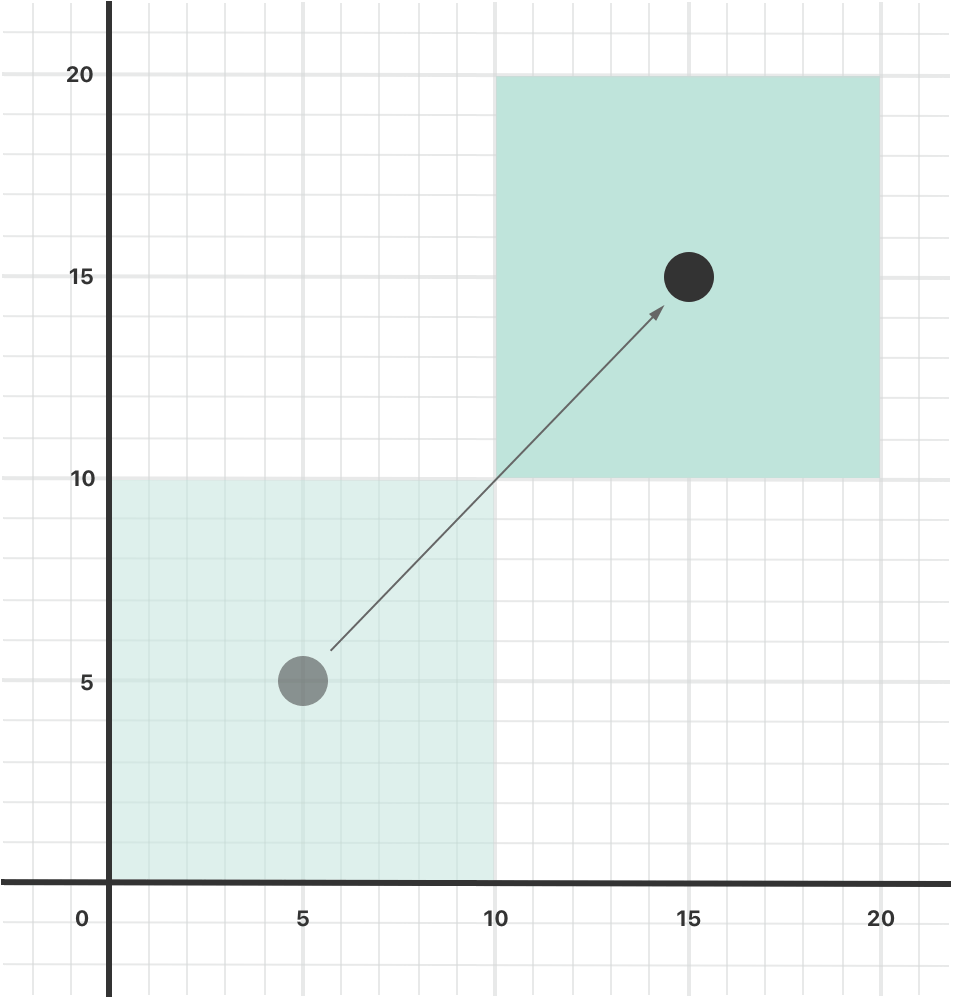
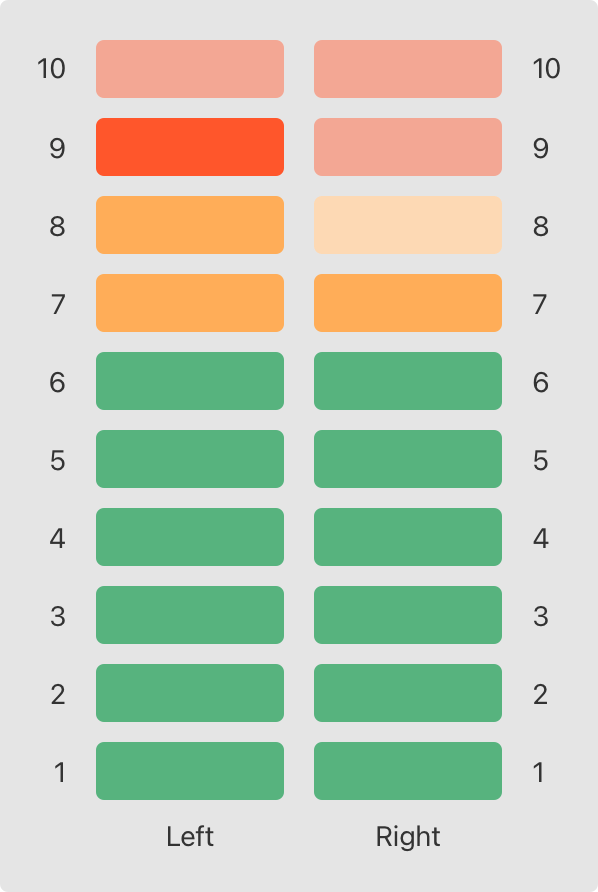

属性将值与特定的类、结构体或枚举关联。存储属性会将常量和变量存储为实例的一部分，而计算属性则是直接计算（而不是存储）值。计算属性可以用于类、结构体和枚举，而存储属性只能用于类和结构体。
存储属性和计算属性通常与特定类型的实例关联。但是，属性也可以直接与类型本身关联，这种属性称为类型属性。
另外，还可以定义属性观察器来监控属性值的变化，以此来触发自定义的操作。属性观察器可以添加到类本身定义的存储属性上，也可以添加到从父类继承的属性上。
你也可以利用属性包装器来复用多个属性的 getter 和 setter 中的代码。
简单来说，一个存储属性就是存储在特定类或结构体实例里的一个常量或变量。存储属性可以是变量存储属性（用关键字 var 定义），也可以是常量存储属性（用关键字 let 定义）。
可以在定义存储属性的时候指定默认值，请参考 默认构造器 一节。也可以在构造过程中设置或修改存储属性的值，甚至修改常量存储属性的值，请参考 构造过程中常量属性的修改 一节。
下面的例子定义了一个名为 FixedLengthRange 的结构体，该结构体用于描述整数的区间，且这个范围值在被创建后不能被修改。
xxxxxxxxxxstruct FixedLengthRange { var firstValue: Int let length: Int}var rangeOfThreeItems = FixedLengthRange(firstValue: 0, length: 3)// 该区间表示整数 0，1，2rangeOfThreeItems.firstValue = 6// 该区间现在表示整数 6，7，8FixedLengthRange 的实例包含一个名为 firstValue 的变量存储属性和一个名为 length 的常量存储属性。在上面的例子中，length 在创建实例的时候被初始化，且之后无法修改它的值，因为它是一个常量存储属性。
如果创建了一个结构体实例并将其赋值给一个常量，则无法修改该实例的任何属性，即使被声明为可变属性也不行:
xxxxxxxxxxlet rangeOfFourItems = FixedLengthRange(firstValue: 0, length: 4)// 该区间表示整数 0，1，2，3rangeOfFourItems.firstValue = 6// 尽管 firstValue 是个可变属性，但这里还是会报错因为 rangeOfFourItems 被声明成了常量（用 let 关键字），所以即使 firstValue 是一个可变属性，也无法再修改它了。
这种行为是由于结构体属于值类型。当值类型的实例被声明为常量的时候，它的所有属性也就成了常量。
属于引用类型的类则不一样。把一个引用类型的实例赋给一个常量后，依然可以修改该实例的可变属性。
延时加载存储属性是指当第一次被调用的时候才会计算其初始值的属性。在属性声明前使用 lazy 来标示一个延时加载存储属性。
注意
必须将延时加载属性声明成变量（使用
var关键字），因为属性的初始值可能在实例构造完成之后才会得到。而常量属性在构造过程完成之前必须要有初始值，因此无法声明成延时加载。
当属性的值依赖于一些外部因素且这些外部因素只有在构造过程结束之后才会知道的时候，延时加载属性就会很有用。或者当获得属性的值因为需要复杂或者大量的计算，而需要采用需要的时候再计算的方式，延时加载属性也会很有用。
下面的例子使用了延时加载存储属性来避免复杂类中不必要的初始化工作。例子中定义了 DataImporter 和 DataManager 两个类，下面是部分代码：
xclass DataImporter { /* DataImporter 是一个负责将外部文件中的数据导入的类。 这个类的初始化会消耗不少时间。 */ var fileName = "data.txt" // 这里会提供数据导入功能}
class DataManager { lazy var importer = DataImporter() var data: [String] = [] // 这里会提供数据管理功能}
let manager = DataManager()manager.data.append("Some data")manager.data.append("Some more data")// DataImporter 实例的 importer 属性还没有被创建DataManager 类包含一个名为 data 的存储属性，初始值是一个空的字符串数组。这里没有给出全部代码，只需知道 DataManager 类的目的是管理和提供对这个字符串数组的访问即可。
DataManager 的一个功能是从文件中导入数据。这个功能由 DataImporter 类提供，DataImporter 完成初始化需要消耗不少时间：因为它的实例在初始化时可能需要打开文件并读取文件中的内容到内存中。
DataManager 管理数据时也可能不从文件中导入数据。所以当 DataManager 的实例被创建时，没必要创建一个 DataImporter 的实例，更明智的做法是第一次用到 DataImporter 的时候才去创建它。
由于使用了 lazy，DataImporter 的实例 importer 属性只有在第一次被访问的时候才被创建。比如访问它的属性 fileName 时：
xxxxxxxxxxprint(manager.importer.fileName)// DataImporter 实例的 importer 属性现在被创建了// 输出“data.txt”注意
如果一个被标记为
lazy的属性在没有初始化时就同时被多个线程访问，则无法保证该属性只会被初始化一次。
如果你有过 Objective-C 经验，应该知道 Objective-C 为类实例存储值和引用提供两种方法。除了属性之外，还可以使用实例变量作为一个备份存储将变量值赋值给属性。
Swift 编程语言中把这些理论统一用属性来实现。Swift 中的属性没有对应的实例变量，属性的备份存储也无法直接访问。这就避免了不同场景下访问方式的困扰，同时也将属性的定义简化成一个语句。属性的全部信息——包括命名、类型和内存管理特征——作为类型定义的一部分，都定义在一个地方。
除存储属性外，类、结构体和枚举可以定义计算属性。计算属性不直接存储值，而是提供一个 getter 和一个可选的 setter，来间接获取和设置其他属性或变量的值。
xxxxxxxxxxstruct Point { var x = 0.0, y = 0.0}struct Size { var width = 0.0, height = 0.0}struct Rect { var origin = Point() var size = Size() var center: Point { get { let centerX = origin.x + (size.width / 2) let centerY = origin.y + (size.height / 2) return Point(x: centerX, y: centerY) } set(newCenter) { origin.x = newCenter.x - (size.width / 2) origin.y = newCenter.y - (size.height / 2) } }}var square = Rect(origin: Point(x: 0.0, y: 0.0), size: Size(width: 10.0, height: 10.0))let initialSquareCenter = square.centersquare.center = Point(x: 15.0, y: 15.0)print("square.origin is now at (\(square.origin.x), \(square.origin.y))")// 打印“square.origin is now at (10.0, 10.0)”这个例子定义了 3 个结构体来描述几何形状：
Point 封装了一个 (x, y) 的坐标Size 封装了一个 width 和一个 heightRect 表示一个有原点和尺寸的矩形Rect 也提供了一个名为 center 的计算属性。一个 Rect 的中心点可以从 origin（原点）和 size（大小）算出，所以不需要将中心点以 Point 类型的值来保存。Rect 的计算属性 center 提供了自定义的 getter 和 setter 来获取和设置矩形的中心点，就像它有一个存储属性一样。
上述例子中创建了一个名为 square 的 Rect 实例，初始值原点是 (0, 0)，宽度高度都是 10。如下图中蓝色正方形所示。
square 的 center 属性可以通过点运算符（square.center）来访问，这会调用该属性的 getter 来获取它的值。跟直接返回已经存在的值不同，getter 实际上通过计算然后返回一个新的 Point 来表示 square 的中心点。如代码所示，它正确返回了中心点 (5, 5)。
center 属性之后被设置了一个新的值 (15, 15)，表示向右上方移动正方形到如下图橙色正方形所示的位置。设置属性 center 的值会调用它的 setter 来修改属性 origin 的 x 和 y 的值，从而实现移动正方形到新的位置。

如果计算属性的 setter 没有定义表示新值的参数名，则可以使用默认名称 newValue。下面是使用了简化 setter 声明的 Rect 结构体代码：
xxxxxxxxxxstruct AlternativeRect { var origin = Point() var size = Size() var center: Point { get { let centerX = origin.x + (size.width / 2) let centerY = origin.y + (size.height / 2) return Point(x: centerX, y: centerY) } set { origin.x = newValue.x - (size.width / 2) origin.y = newValue.y - (size.height / 2) } }}如果整个 getter 是单一表达式，getter 会隐式地返回这个表达式结果。下面是另一个版本的 Rect 结构体，用到了简化的 getter 和 setter 声明：
xxxxxxxxxxstruct CompactRect { var origin = Point() var size = Size() var center: Point { get { Point(x: origin.x + (size.width / 2), y: origin.y + (size.height / 2)) } set { origin.x = newValue.x - (size.width / 2) origin.y = newValue.y - (size.height / 2) } }}在 getter 中忽略 return 与在函数中忽略 return 的规则相同，请参考 隐式返回的函数。
只有 getter 没有 setter 的计算属性叫只读计算属性。只读计算属性总是返回一个值，可以通过点运算符访问，但不能设置新的值。
注意
必须使用
var关键字定义计算属性，包括只读计算属性，因为它们的值不是固定的。let关键字只用来声明常量属性，表示初始化后再也无法修改的值。
只读计算属性的声明可以去掉 get 关键字和花括号：
xxxxxxxxxxstruct Cuboid { var width = 0.0, height = 0.0, depth = 0.0 var volume: Double { return width * height * depth }}let fourByFiveByTwo = Cuboid(width: 4.0, height: 5.0, depth: 2.0)print("the volume of fourByFiveByTwo is \(fourByFiveByTwo.volume)")// 打印“the volume of fourByFiveByTwo is 40.0”这个例子定义了一个名为 Cuboid 的结构体，表示三维空间的立方体，包含 width、height 和 depth 属性。结构体还有一个名为 volume 的只读计算属性用来返回立方体的体积。为 volume 提供 setter 毫无意义，因为无法确定如何修改 width、height 和 depth 三者的值来匹配新的 volume。然而，Cuboid 提供一个只读计算属性来让外部用户直接获取体积是很有用的。
属性观察器监控和响应属性值的变化，每次属性被设置值的时候都会调用属性观察器，即使新值和当前值相同的时候也不例外。
你可以在以下位置添加属性观察器：
对于继承的属性，你可以在子类中通过重写属性的方式为它添加属性观察器。对于自定义的计算属性来说，使用它的 setter 监控和响应值的变化，而不是尝试创建观察器。属性重写请参考 重写。
可以为属性添加其中一个或两个观察器：
willSet 在新的值被设置之前调用didSet 在新的值被设置之后调用willSet 观察器会将新的属性值作为常量参数传入，在 willSet 的实现代码中可以为这个参数指定一个名称，如果不指定则参数仍然可用，这时使用默认名称 newValue 表示。
同样，didSet 观察器会将旧的属性值作为参数传入，可以为该参数指定一个名称或者使用默认参数名 oldValue。如果在 didSet 方法中再次对该属性赋值，那么新值会覆盖旧的值。
注意
在父类初始化方法调用之后，在子类构造器中给父类的属性赋值时，会调用父类属性的
willSet和didSet观察器。而在父类初始化方法调用之前，给子类的属性赋值时不会调用子类属性的观察器。
下面是一个 willSet 和 didSet 实际运用的例子，其中定义了一个名为 StepCounter 的类，用来统计一个人步行时的总步数。这个类可以跟计步器或其他日常锻炼的统计装置的输入数据配合使用。
xxxxxxxxxxclass StepCounter { var totalSteps: Int = 0 { willSet(newTotalSteps) { print("将 totalSteps 的值设置为 \(newTotalSteps)") } didSet { if totalSteps > oldValue { print("增加了 \(totalSteps - oldValue) 步") } } }}let stepCounter = StepCounter()stepCounter.totalSteps = 200// 将 totalSteps 的值设置为 200// 增加了 200 步stepCounter.totalSteps = 360// 将 totalSteps 的值设置为 360// 增加了 160 步stepCounter.totalSteps = 896// 将 totalSteps 的值设置为 896// 增加了 536 步StepCounter 类定义了一个叫 totalSteps 的 Int 类型的属性。它是一个存储属性，包含 willSet 和 didSet 观察器。
当 totalSteps 被设置新值的时候，它的 willSet 和 didSet 观察器都会被调用，即使新值和当前值完全相同时也会被调用。
例子中的 willSet 观察器将表示新值的参数自定义为 newTotalSteps，这个观察器只是简单的将新的值输出。
didSet 观察器在 totalSteps 的值改变后被调用，它把新值和旧值进行对比，如果总步数增加了，就输出一个消息表示增加了多少步。didSet 没有为旧值提供自定义名称，所以默认值 oldValue 表示旧值的参数名。
注意
如果将带有观察器的属性通过 in-out 方式传入函数，
willSet和didSet也会调用。这是因为 in-out 参数采用了拷入拷出内存模式：即在函数内部使用的是参数的 copy，函数结束后，又对参数重新赋值。关于 in-out 参数详细的介绍，请参考 输入输出参数。
属性包装器在管理属性如何存储和定义属性的代码之间添加了一个分隔层。举例来说，如果你的属性需要线程安全性检查或者需要在数据库中存储它们的基本数据，那么必须给每个属性添加同样的逻辑代码。当使用属性包装器时，你只需在定义属性包装器时编写一次管理代码，然后应用到多个属性上来进行复用。
定义一个属性包装器，你需要创建一个定义 wrappedValue 属性的结构体、枚举或者类。在下面的代码中，TwelveOrLess 结构体确保它包装的值始终是小于等于 12 的数字。如果要求它存储一个更大的数字，它则会存储 12 这个数字。
xxxxxxxxxx@propertyWrapperstruct TwelveOrLess { private var number = 0 var wrappedValue: Int { get { return number } set { number = min(newValue, 12) } }}这个 setter 确保新值小于 12，而且返回被存储的值。
注意
上面例子以
private的方式声明number变量，这使得number仅在TwelveOrLess的实现中使用。写在其他地方的代码通过使用wrappedValue的 getter 和 setter 来获取这个值，但不能直接使用number。有关private的更多信息，请参考 访问控制
通过在属性之前写上包装器名称作为特性的方式，你可以把一个包装器应用到一个属性上去。这里有个存储小矩形的结构体，通过 TwelveOrLess 属性包装器来确保它的长宽均小于等于 12。
xxxxxxxxxxstruct SmallRectangle { @TwelveOrLess var height: Int @TwelveOrLess var width: Int}
var rectangle = SmallRectangle()print(rectangle.height)// 打印 "0"
rectangle.height = 10print(rectangle.height)// 打印 "10"
rectangle.height = 24print(rectangle.height)// 打印 "12"height 和 width 属性从 TwelveOrLess 的定义中获取它们的初始值。该定义把 TwelveOrLess.number 设置为 0。把数字 10 存进 rectangle.height 中的操作能成功，是因为数字 10 很小。尝试存储 24 的操作实际上存储的值为 12，这是因为对于这个属性的 setter 的规则来说，24 太大了。
当你把一个包装器应用到一个属性上时，编译器将合成提供包装器存储空间和通过包装器访问属性的代码。（属性包装器只负责存储被包装值，所以没有合成这些代码。）不利用这个特性语法的情况下，你可以写出使用属性包装器行为的代码。举例来说，这是先前代码清单中的 SmallRectangle 的另一个版本。这个版本将其属性明确地包装在 TwelveOrLess 结构体中，而不是把 @TwelveOrLess 作为特性写下来：
xxxxxxxxxxstruct SmallRectangle { private var _height = TwelveOrLess() private var _width = TwelveOrLess() var height: Int { get { return _height.wrappedValue } set { _height.wrappedValue = newValue } } var width: Int { get { return _width.wrappedValue } set { _width.wrappedValue = newValue } }}_height 和 _width 属性存着这个属性包装器的一个实例，即 TwelveOrLess。height 和 width 的 getter 和 setter 把对 wrappedValue 属性的访问包装起来。
上面例子中的代码通过在 TwelveOrLess 的定义中赋予 number 一个初始值来设置被包装属性的初始值。使用这个属性包装器的代码没法为被 TwelveOrLess 包装的属性指定其他初始值。举例来说，SmallRectangle 的定义没法给 height 或者 width 一个初始值。为了支持设定一个初始值或者其他自定义操作，属性包装器需要添加一个构造器。这是 TwelveOrLess 的扩展版本，称为 SmallNumber。SmallNumber 定义了能设置被包装值和最大值的构造器：
xxxxxxxxxx@propertyWrapperstruct SmallNumber { private var maximum: Int private var number: Int
var wrappedValue: Int { get { return number } set { number = min(newValue, maximum) } }
init() { maximum = 12 number = 0 } init(wrappedValue: Int) { maximum = 12 number = min(wrappedValue, maximum) } init(wrappedValue: Int, maximum: Int) { self.maximum = maximum number = min(wrappedValue, maximum) }}SmallNumber 的定义包括三个构造器——init()、init(wrappedValue:) 和 init(wrappedValue:maximum:)——下面的示例使用这三个构造器来设置被包装值和最大值。有关构造过程和构造器语法的更多信息，请参考 构造过程。
当你把包装器应用于属性且没有设定初始值时，Swift 使用 init() 构造器来设置包装器。举个例子：
xxxxxxxxxxstruct ZeroRectangle { @SmallNumber var height: Int @SmallNumber var width: Int}
var zeroRectangle = ZeroRectangle()print(zeroRectangle.height, zeroRectangle.width)// 打印 "0 0"调用 SmallNumber() 来创建包装 height 和 width 的 SmallNumber 的实例。构造器内部的代码使用默认值 0 和 12 设置初始的被包装值和初始的最大值。像之前使用在 SmallRectangle 中使用 TwelveOrLess 的例子，这个属性包装器仍然提供所有的初始值。与这个例子不同的是，SmallNumber 也支持把编写这些初始值作为声明属性的一部分。
当你为属性指定初始值时，Swift 使用 init(wrappedValue:) 构造器来设置包装器。举个例子：
xxxxxxxxxxstruct UnitRectangle { @SmallNumber var height: Int = 1 @SmallNumber var width: Int = 1}
var unitRectangle = UnitRectangle()print(unitRectangle.height, unitRectangle.width)// 打印 "1 1"当你对一个被包装的属性写下 = 1 时，这被转换为调用 init(wrappedValue:) 构造器。调用 SmallNumber(wrappedValue: 1)来创建包装 height 和 width 的 SmallNumber 的实例。构造器使用此处指定的被包装值，且使用的默认最大值为 12。
当你在自定义特性后面把实参写在括号里时，Swift 使用接受这些实参的构造器来设置包装器。举例来说，如果你提供初始值和最大值，Swift 使用 init(wrappedValue:maximum:) 构造器:
xxxxxxxxxxstruct NarrowRectangle { @SmallNumber(wrappedValue: 2, maximum: 5) var height: Int @SmallNumber(wrappedValue: 3, maximum: 4) var width: Int}
var narrowRectangle = NarrowRectangle()print(narrowRectangle.height, narrowRectangle.width)// 打印 "2 3"
narrowRectangle.height = 100narrowRectangle.width = 100print(narrowRectangle.height, narrowRectangle.width)// 打印 "5 4"调用 SmallNumber(wrappedValue: 2, maximum: 5) 来创建包装 height 的 SmallNumber 的一个实例。调用 SmallNumber(wrappedValue: 3, maximum: 4) 来创建包装 width 的 SmallNumber 的一个实例。
通过将实参包含到属性包装器中，你可以设置包装器的初始状态，或者在创建包装器时传递其他的选项。这种语法是使用属性包装器最通用的方法。你可以为这个属性提供任何所需的实参，且它们将被传递给构造器。
当包含属性包装器实参时，你也可以使用赋值来指定初始值。Swift 将赋值视为 wrappedValue 参数，且使用接受被包含的实参的构造器。举个例子：
xxxxxxxxxxstruct MixedRectangle { @SmallNumber var height: Int = 1 @SmallNumber(maximum: 9) var width: Int = 2}
var mixedRectangle = MixedRectangle()print(mixedRectangle.height)// 打印 "1"
mixedRectangle.height = 20print(mixedRectangle.height)// 打印 "12"调用 SmallNumber(wrappedValue: 1) 来创建包装 height 的 SmallNumber 的一个实例，这个实例使用默认最大值 12。调用 SmallNumber(wrappedValue: 2, maximum: 9) 来创建包装 width 的 SmallNumber 的一个实例。
除了被包装值，属性包装器可以通过定义被呈现值暴露出其他功能。举个例子，管理对数据库的访问的属性包装器可以在它的被呈现值上暴露出 flushDatabaseConnection() 方法。除了以货币符号（$）开头，被呈现值的名称和被包装值是一样的。因为你的代码不能够定义以 $ 开头的属性，所以被呈现值永远不会与你定义的属性有冲突。
在之前 SmallNumber 的例子中，如果你尝试把这个属性设置为一个很大的数值，属性包装器会在存储这个数值之前调整这个数值。以下的代码把被呈现值添加到 SmallNumber 结构体中来追踪在存储新值之前属性包装器是否为这个属性调整了新值。
xxxxxxxxxx@propertyWrapperstruct SmallNumber { private var number: Int private(set) var projectedValue: Bool
var wrappedValue: Int { get { return number } set { if newValue > 12 { number = 12 projectedValue = true } else { number = newValue projectedValue = false } } }
init() { self.number = 0 self.projectedValue = false }}struct SomeStructure { @SmallNumber var someNumber: Int}var someStructure = SomeStructure()
someStructure.someNumber = 4print(someStructure.$someNumber)// 打印 "false"
someStructure.someNumber = 55print(someStructure.$someNumber)// 打印 "true"写下 someStructure.$someNumber 即可访问包装器的被呈现值。在存储一个比较小的数值时，如 4 ，someStructure.$someNumber 的值为 false。但是，在尝试存储一个较大的数值时，如 55 ，被呈现值变为 true。
属性包装器可以返回任何类型的值作为它的被呈现值。在这个例子里，属性包装器要暴露的信息是：那个数值是否被调整过，所以它暴露出布尔型值来作为它的被呈现值。需要暴露出更多信息的包装器可以返回其他数据类型的实例，或者可以返回自身来暴露出包装器的实例，并把其作为它的被呈现值。
当从类型的一部分代码中访问被呈现值，例如属性 getter 或实例方法，你可以在属性名称之前省略 self.，就像访问其他属性一样。以下示例中的代码用 $height 和 $width 引用包装器 height 和 width 的被呈现值：
xxxxxxxxxxenum Size { case small, large}
struct SizedRectangle { @SmallNumber var height: Int @SmallNumber var width: Int
mutating func resize(to size: Size) -> Bool { switch size { case .small: height = 10 width = 20 case .large: height = 100 width = 100 } return $height || $width }}因为属性包装器语法只是具有 getter 和 setter 的属性的语法糖，所以访问 height 和 width 的行为与访问任何其他属性的行为相同。举个例子，resize(to:) 中的代码使用它们的属性包装器来访问 height 和 width。如果调用 resize(to: .large)，.large 的 switch case 分支语句把矩形的高度和宽度设置为 100。属性包装器防止这些属性的值大于 12，且把被呈现值设置成为 true 来记下它调整过这些值的事实。在 resize(to:) 的最后，返回语句检查 $height 和 $width 来确认是否属性包装器调整过 height 或 width。
计算属性和观察属性所描述的功能也可以用于全局变量和局部变量。全局变量是在函数、方法、闭包或任何类型之外定义的变量。局部变量是在函数、方法或闭包内部定义的变量。
前面章节提到的全局或局部变量都属于存储型变量，跟存储属性类似，它为特定类型的值提供存储空间，并允许读取和写入。
另外，在全局或局部范围都可以定义计算型变量和为存储型变量定义观察器。计算型变量跟计算属性一样，返回一个计算结果而不是存储值，声明格式也完全一样。
注意
全局的常量或变量都是延迟计算的，跟 延时加载存储属性 相似，不同的地方在于，全局的常量或变量不需要标记
lazy修饰符。局部范围的常量和变量从不延迟计算。
可以在局部存储型变量上使用属性包装器，但不能在全局变量或者计算型变量上使用。比如下面的代码，myNumber 使用 SmallNumber 作为属性包装器。
xxxxxxxxxxfunc someFunction() { @SmallNumber var myNumber: Int = 0
myNumber = 10 // 这时 myNumber 是 10
myNumber = 24 // 这时 myNumber 是 12}就像将 SmallNumber 应用到属性上一样，将 myNumber 赋值为 10 是有效的。而因为这个属性包装器不允许值大于 12，将 myNumber 赋值为 24 时则会变成 12。
实例属性属于一个特定类型的实例，每创建一个实例，实例都拥有属于自己的一套属性值，实例之间的属性相互独立。
你也可以为类型本身定义属性，无论创建了多少个该类型的实例，这些属性都只有唯一一份。这种属性就是类型属性。
类型属性用于定义某个类型所有实例共享的数据，比如所有实例都能用的一个常量（就像 C 语言中的静态常量），或者所有实例都能访问的一个变量（就像 C 语言中的静态变量）。
存储型类型属性可以是变量或常量，计算型类型属性跟实例的计算型属性一样只能定义成变量属性。
注意
跟实例的存储型属性不同，必须给存储型类型属性指定默认值，因为类型本身没有构造器，也就无法在初始化过程中使用构造器给类型属性赋值。
存储型类型属性是延迟初始化的，它们只有在第一次被访问的时候才会被初始化。即使它们被多个线程同时访问，系统也保证只会对其进行一次初始化，并且不需要对其使用
lazy修饰符。
在 C 或 Objective-C 中，与某个类型关联的静态常量和静态变量，是作为 global（全局）静态变量定义的。但是在 Swift 中，类型属性是作为类型定义的一部分写在类型最外层的花括号内，因此它的作用范围也就在类型支持的范围内。
使用关键字 static 来定义类型属性。在为类定义计算型类型属性时，可以改用关键字 class 来支持子类对父类的实现进行重写。下面的例子演示了存储型和计算型类型属性的语法：
xxxxxxxxxxstruct SomeStructure { static var storedTypeProperty = "Some value." static var computedTypeProperty: Int { return 1 }}enum SomeEnumeration { static var storedTypeProperty = "Some value." static var computedTypeProperty: Int { return 6 }}class SomeClass { static var storedTypeProperty = "Some value." static var computedTypeProperty: Int { return 27 } class var overrideableComputedTypeProperty: Int { return 107 }}注意
例子中的计算型类型属性是只读的，但也可以定义可读可写的计算型类型属性，跟计算型实例属性的语法相同。
跟实例属性一样，类型属性也是通过点运算符来访问。但是，类型属性是通过类型本身来访问，而不是通过实例。比如：
xxxxxxxxxxprint(SomeStructure.storedTypeProperty)// 打印“Some value.”SomeStructure.storedTypeProperty = "Another value."print(SomeStructure.storedTypeProperty)// 打印“Another value.”print(SomeEnumeration.computedTypeProperty)// 打印“6”print(SomeClass.computedTypeProperty)// 打印“27”下面的例子定义了一个结构体，使用两个存储型类型属性来表示两个声道的音量，每个声道具有 0 到 10 之间的整数音量。
下图展示了如何把两个声道结合来模拟立体声的音量。当声道的音量是 0，没有一个灯会亮；当声道的音量是 10，所有灯点亮。本图中，左声道的音量是 9，右声道的音量是 7：

上面所描述的声道模型使用 AudioChannel 结构体的实例来表示：
xxxxxxxxxxstruct AudioChannel { static let thresholdLevel = 10 static var maxInputLevelForAllChannels = 0 var currentLevel: Int = 0 { didSet { if currentLevel > AudioChannel.thresholdLevel { // 将当前音量限制在阈值之内 currentLevel = AudioChannel.thresholdLevel } if currentLevel > AudioChannel.maxInputLevelForAllChannels { // 存储当前音量作为新的最大输入音量 AudioChannel.maxInputLevelForAllChannels = currentLevel } } }}AudioChannel 结构定义了 2 个存储型类型属性来实现上述功能。第一个是 thresholdLevel，表示音量的最大上限阈值，它是一个值为 10 的常量，对所有实例都可见，如果音量高于 10，则取最大上限值 10（见后面描述）。
第二个类型属性是变量存储型属性 maxInputLevelForAllChannels，它用来表示所有 AudioChannel 实例的最大输入音量，初始值是 0。
AudioChannel 也定义了一个名为 currentLevel 的存储型实例属性，表示当前声道现在的音量，取值为 0 到 10。
属性 currentLevel 包含 didSet 属性观察器来检查每次设置后的属性值，它做如下两个检查：
currentLevel 的新值大于允许的阈值 thresholdLevel，属性观察器将 currentLevel 的值限定为阈值 thresholdLevel。currentLevel 值大于静态类型属性 maxInputLevelForAllChannels 的值，属性观察器就将新值保存在 maxInputLevelForAllChannels 中。注意
在第一个检查过程中，
didSet属性观察器将currentLevel设置成了不同的值，但这不会造成属性观察器被再次调用。
可以使用结构体 AudioChannel 创建两个声道 leftChannel 和 rightChannel，用以表示立体声系统的音量：
xxxxxxxxxxvar leftChannel = AudioChannel()var rightChannel = AudioChannel()如果将左声道的 currentLevel 设置成 7，类型属性 maxInputLevelForAllChannels 也会更新成 7：
xxxxxxxxxxleftChannel.currentLevel = 7print(leftChannel.currentLevel)// 输出“7”print(AudioChannel.maxInputLevelForAllChannels)// 输出“7”如果试图将右声道的 currentLevel 设置成 11，它会被修正到最大值 10，同时 maxInputLevelForAllChannels 的值也会更新到 10：
rightChannel.currentLevel = 11print(rightChannel.currentLevel)// 输出“10”print(AudioChannel.maxInputLevelForAllChannels)// 输出“10”